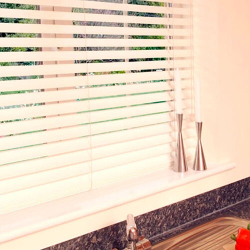
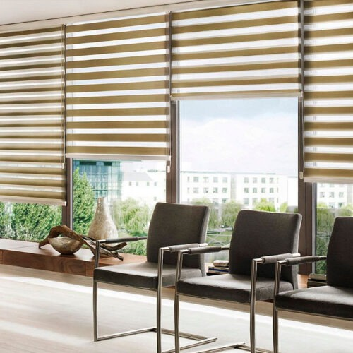

Ayuda a regular la entrada de luz, como también la temperatura de la habitación. Brinda mayor comodidad y privacidad a los hambientes.

Se adaptan a todo tipo de habitaciones gracias a nuestro gran catálogo, ayudando así a decorar cada lugar.

Gracias a la gran calidad de las telas importadas, recisten mucho más el paso del tiempo, como también, son faciles de remover para su posterior limpieza o cambio.